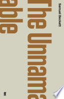
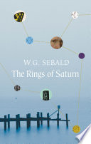
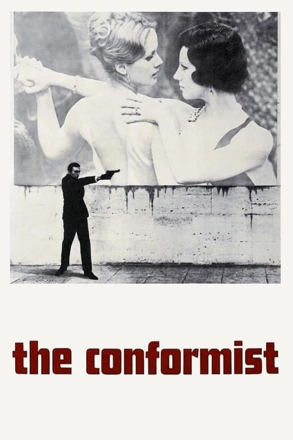
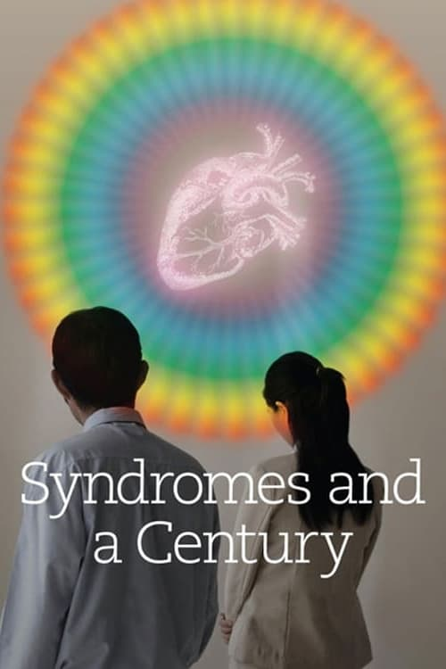
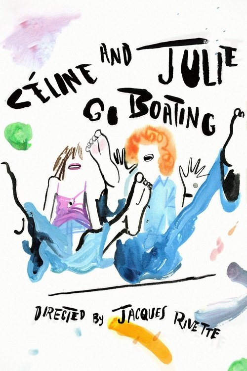
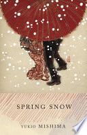
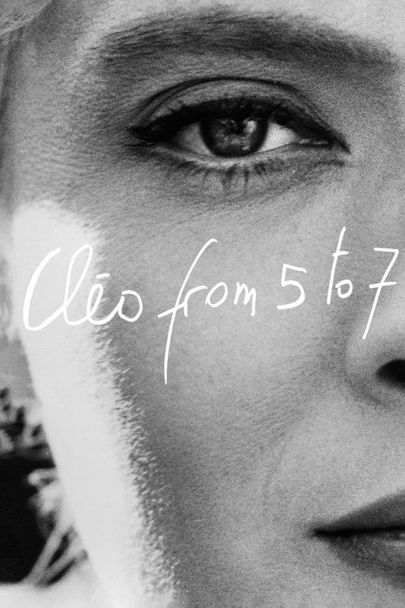
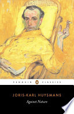

AI Recommendation
The Unnamable
Why It Fits
You read Waiting for Godot. This is Beckett's prose trilogy pushed to its limit — pure voice, no character, no plot. The endgame of European nihilism.
AI-generated picks from your reading and viewing history

You read Waiting for Godot. This is Beckett's prose trilogy pushed to its limit — pure voice, no character, no plot. The endgame of European nihilism.

A walking memoir that dissolves into digressions on Conrad, silk, and destroyed landscapes. Somewhere between Proust and Fustel de Coulanges.

Miłosz's memoir — the natural follow-up to The Captive Mind. A life lived across pre-war Vilnius, Nazi occupation, and Communist Poland.

Pairs with The Captive Mind and your interest in fascism as psychology. A man joins Mussolini's secret police to suppress his own nature. Visually stunning.

If Perfect Days and the contemplative end of your taste had an Asian counterpart. Thai hospital life, memory, and light.

You've watched a lot of French cinema — Rohmer, Malle, Bresson, Godard. This Rivette masterpiece is the great gap. Playful and mysterious.


